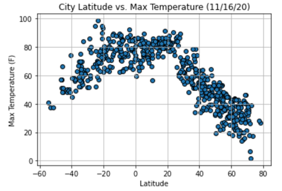

"This project was to create a random list of 500+ cities from across the globe and conduct an API data call to gather current weather data for those cities. Then clean and analyze the weather data to generate a series of scatter plots and regression models in order to make data based observations about global weather patterns.
Design concept:
- 1. The project begins with generating 1500 random latitude and longitude values and using citypy to determine the nearest cities to those coordinates and appending them to a list (duplicate cities are skipped).
- 2. The program then creates a series of successive API calls to openweathermap.org to collect the weather data for each of the cities into a list (weather_data) - (if a city is not found or is missing key weather data values, it is skipped).
- 3. The list of weather data is read into a dataframe (city_data) and output to cities.csv in the output_data directory.
- 4. Summary data is calculated for the DataFrame and any cities with a humidity above 100% are identified and deleted as a new DataFrame is created (clean_city_data).
- 5. The clean_city_data is plotted into a series of scatter plots of weather variables vs. latitude and analyzed.